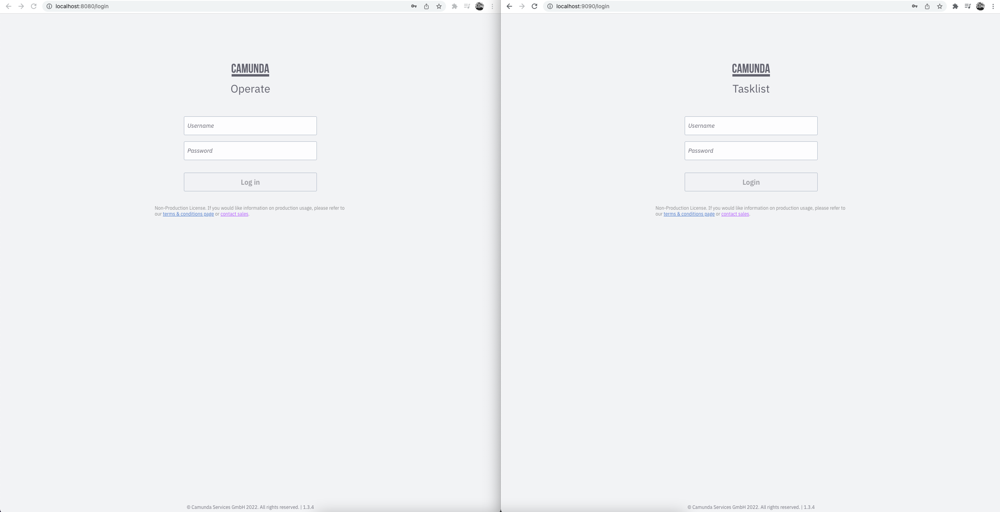
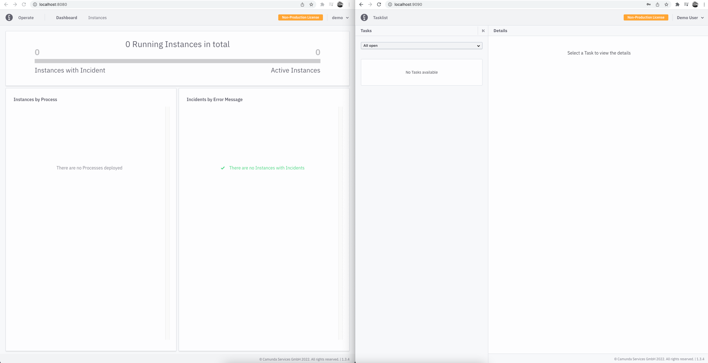

Accessing components without Ingress
By default, the Camunda Helm chart does not expose the Camunda services externally. So to interact with the Camunda services inside a Kubernetes cluster without Ingress setup, you can use kubectl port-forward to route traffic from your local machine to the cluster. This is useful for quick tests or for development purposes.
You need to keep port-forward running all the time to communicate with the remote cluster.
Accessing workflow engine
To interact with Camunda workflow engine via Zeebe Gateway using zbctl or a local client/worker from outside the Kubernetes cluster, run kubectl port-forward to the Zeebe cluster as following:
kubectl port-forward svc/camunda-zeebe-gateway 26500:26500
Now, you can connect and execute operations against your new Zeebe cluster. This allows you to use zbctl as a command line interface to read and create resources inside the Zeebe broker.
Accessing the Zeebe cluster directly using kubectl port-forward is recommended for development purposes.
Accessing web applications
To interact with Camunda web applications like Operate, Tasklist, and Optimize, also kubectl port-forward will be used.
To use the web applications without Camunda Identity, you can set global.identity.auth.enabled: false in the values file to disable the authentication mechanism.
Do not disable it if you like to use Web Modeler, as it requires Camunda Identity and Keycloak.
First, port-forward for each application service:
kubectl port-forward svc/camunda-operate 8081:80
kubectl port-forward svc/camunda-tasklist 8082:80
kubectl port-forward svc/camunda-optimize 8083:80
kubectl port-forward svc/camunda-connectors 8088:8080
To be able to use Web Modeler, create additional port-forwardings for Web Modeler itself and Keycloak (assuming that Keycloak is installed as part of the Helm release):
kubectl port-forward svc/camunda-web-modeler-webapp 8084:80
kubectl port-forward svc/camunda-web-modeler-websockets 8085:80
kubectl port-forward svc/camunda-keycloak 18080:80
To use Console, create additional port-forwardings for Console and Keycloak (assuming Keycloak is installed as part of the Helm release):
kubectl port-forward svc/camunda-console 8087:80
kubectl port-forward svc/camunda-keycloak 18080:80
The name of the Keycloak service will be truncated after 20 characters if Keycloak 16 is used, for example: svc/long-release-name-ke
Finally, you can access each app pointing your browser at:
- Operate: http://localhost:8081
- Tasklist: http://localhost:8082
- Optimize: http://localhost:8083
- Web Modeler: http://localhost:8084
- Console: http://localhost:8087
Log in to these services using the first user demo/demo credentials.
Operate and Tasklist Login

Operate and Tasklist Dashboard

If you deploy process definitions, they will appear in the dashboard. Then, you can drill down to see your active instances.
You can deploy and create new instances using the Zeebe clients or zbctl.
You can also trigger Connectors inbound webhook, given you deployed one.
You can do so with the following example: curl -X POST -H "Content-Type: application/json" -d '{"myId": 123456, "myMessage": "Hello, world!"}' http://localhost:8088/inbound/<YOUR_WEBHOOK_ID>.